The Golgi and the secretory pathway
Protein handling and organelles
About this lecture
A protein made on the rough ER still has a long way to go. Hormones, antibodies and digestive enzymes must leave the cell; receptors must reach the cell surface; lysosomal enzymes must reach the lysosomes. Today: the secretory pathway, the route from the ER through the Golgi apparatus to the cell surface, and the vesicles that carry proteins along it.
After this lecture you can:
- describe the route ER → ERGIC → Golgi → trans-Golgi network → plasma membrane, and how a pulse-chase experiment shows it;
- explain how a vesicle buds (coats COPII, COPI, clathrin; a small GTPase switch; cargo selection), finds its target (Rab GTPases, tethers) and fuses (SNAREs);
- describe what the Golgi does to proteins (glycosylation, processing) and how cargo crosses the stack (cisternal maturation);
- explain sorting in the trans-Golgi network, and constitutive versus regulated secretion;
- explain how botulinum toxin and failing insulin secretion follow from this machinery.
The question: how does a cell export its proteins?
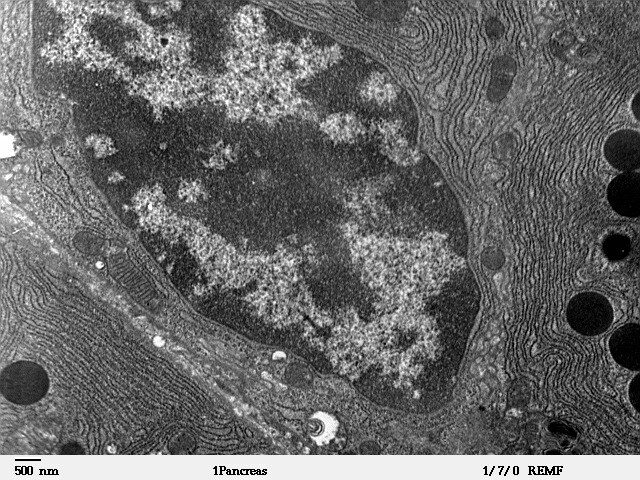
Pancreatic acinar cells, transmission EM. Nucleus (left), stacks of rough ER (thin parallel lines) and dark zymogen granules (right). Scale bar 500 nm.
- Acinar cells of the pancreas make digestive enzymes for the gut: several grams of protein a day in a human.
- The enzymes are made on the rough ER, but they leave the cell from granules at the other end of the cell.
- They are never free in the cytosol: they cross no membrane after the ER.
- And they wait in granules until a meal signal says “now”.
How does a protein travel from ER to outside without crossing a membrane? And how does it know where to go?
The secretory pathway: a map
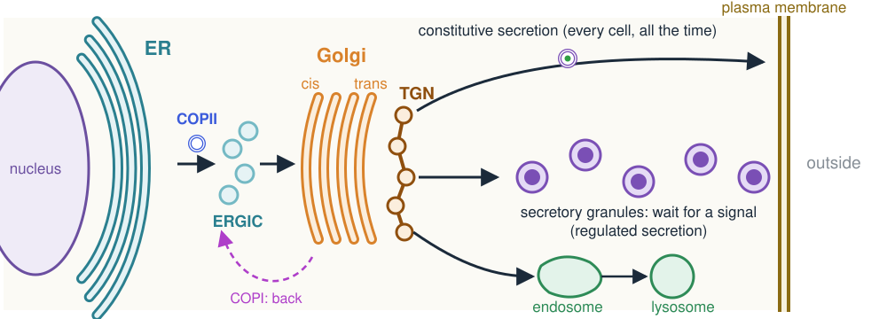
- Anterograde (forward): ER → ERGIC (ER–Golgi intermediate compartment) → cis, medial, trans Golgi → trans-Golgi network (TGN) → plasma membrane, granules or lysosomes. Retrograde (back): COPI vesicles return escaped ER proteins.
- The lumen of every compartment is topologically outside the cell: what faces the lumen will face the outside after fusion.
How do we know? Pulse-chase showed the route
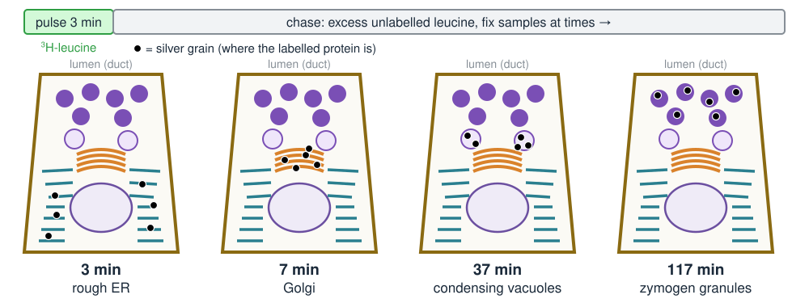
- Pulse: give pancreas slices radioactive amino acid (³H-leucine) for 3 minutes. Chase: wash it away, add unlabelled amino acid. Only the proteins made during the pulse are labelled.
- Fix samples over time, EM autoradiography shows where the label is: rough ER (3 min) → Golgi (about 7–20 min) → condensing vacuoles (about 37 min) → zymogen granules (about 2 h).
- George Palade, Nobel Prize 1974 (with Albert Claude and Christian de Duve).
One transport step: bud, move, tether, fuse
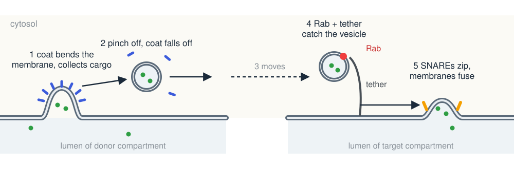
- A coat bends the donor membrane and collects cargo → a vesicle (about 50–100 nm) pinches off → the coat falls off.
- Rab on the vesicle and tethers on the target catch it; SNAREs on both membranes zip together and fuse the bilayers.
- The lumen stays lumen and the cytosolic side stays cytosolic: cargo never crosses a membrane.
Three coats for three kinds of route
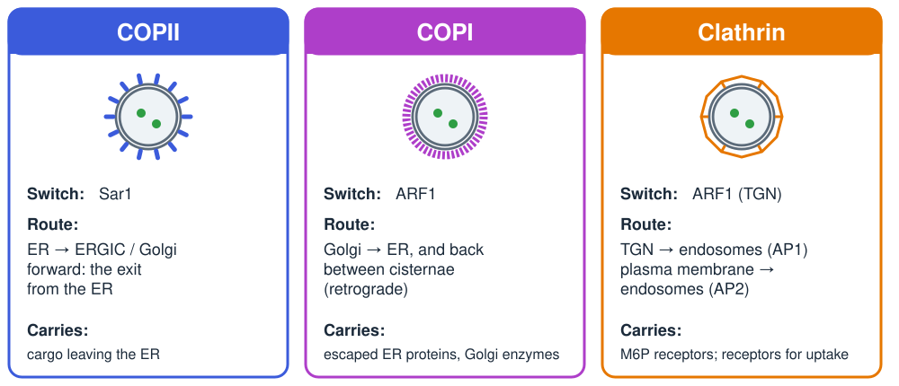
How a coat forms and chooses its cargo
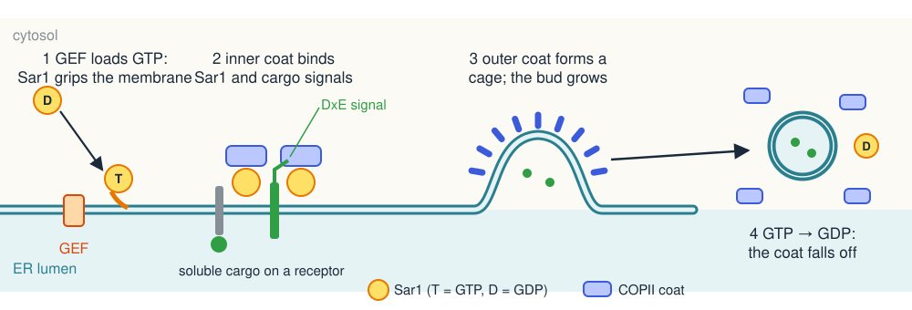
- A small GTPase is the switch: Sar1 (COPII) or ARF1 (COPI, clathrin at the TGN). A GEF in the donor membrane loads GTP → the GTPase puts an amphipathic helix into the membrane and recruits the coat.
- The inner coat binds sorting signals on cargo: e.g. a di-acidic motif (DxE) in a cytosolic tail for COPII. Soluble cargo is collected by cargo receptors.
- GTP hydrolysis releases the coat, so it can be used again.
Address labels and hooks: Rab GTPases and tethers
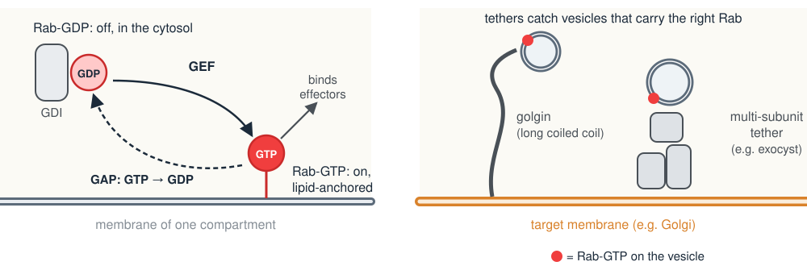
- Rabs: about 60 small GTPases in human cells; each membrane carries its own set (e.g. Rab1 ER→Golgi, Rab27 secretory granules). Rab-GTP sits in the membrane, Rab-GDP is extracted into the cytosol.
- Tethers bind Rab-GTP and catch the vesicle from up to ~200 nm away: long coiled-coil proteins (golgins) or multi-subunit complexes (e.g. the exocyst at the plasma membrane).
- Rabs and tethers give specificity; SNAREs give fusion (and some more specificity).
SNAREs zip two membranes together
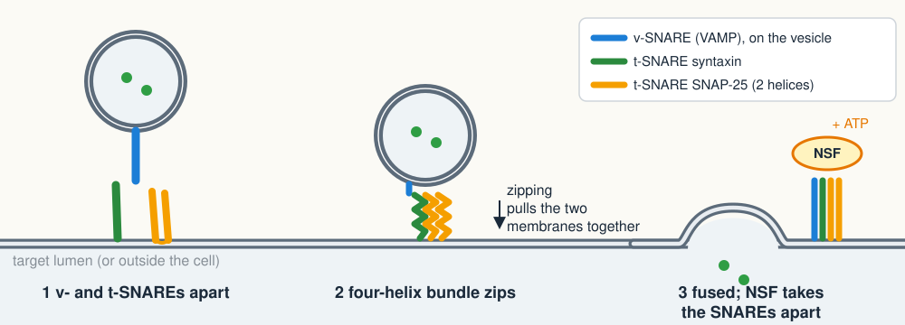
- A v-SNARE on the vesicle (e.g. VAMP/synaptobrevin) and t-SNAREs on the target (e.g. syntaxin, SNAP-25) form a bundle of four α-helices.
- The helices zip from the far end towards the membranes, pulling the bilayers together until they fuse. About 35 SNAREs in human cells; different pairs at different membranes.
- After fusion, the ATPase NSF (with α-SNAP) uses ATP to pull the SNAREs apart so they can be reused.
How do we know? Yeast mutants and a test-tube assay
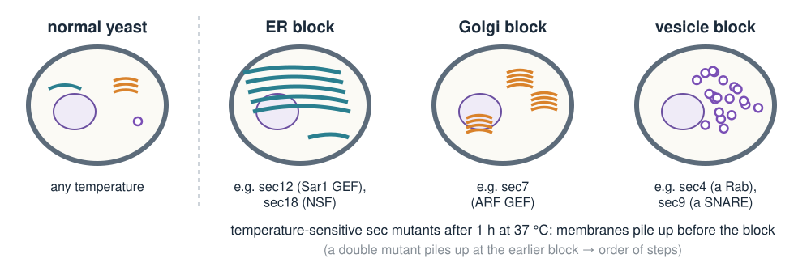
- Genetics (Randy Schekman): yeast temperature-sensitive sec mutants grow at 25 °C; at 37 °C they stop secreting, and membranes pile up where the block is: ER, Golgi or vesicles. Double mutants gave the order of the steps.
- Biochemistry (James Rothman): transport between Golgi membranes in a test tube needs ATP and cytosol → purified NSF, SNAP and then the SNAREs.
- Physiology (Thomas Südhof): synaptotagmin is the Ca²⁺ sensor that times fusion at synapses. Nobel Prize 2013 to all three.
The Golgi apparatus: a stack with two faces

Golgi apparatus in a human cell, transmission EM: the stack of cisternae, the cis face and the trans-Golgi network (TGN) with tubules (arrows). Scale bar 100 nm.
- A stack of 4–8 flat cisternae, each about 1 µm wide; mammalian cells link many stacks into one Golgi ribbon next to the nucleus.
- Polarised: the cis face receives from the ER; the trans face and the TGN ship out.
- Each cisterna has its own enzymes, in the order the cargo needs them, like an assembly line.
- Found by Camillo Golgi in 1898 with a silver stain; its existence was doubted until EM in the 1950s.
What the Golgi does: rebuilding sugars and cutting proteins
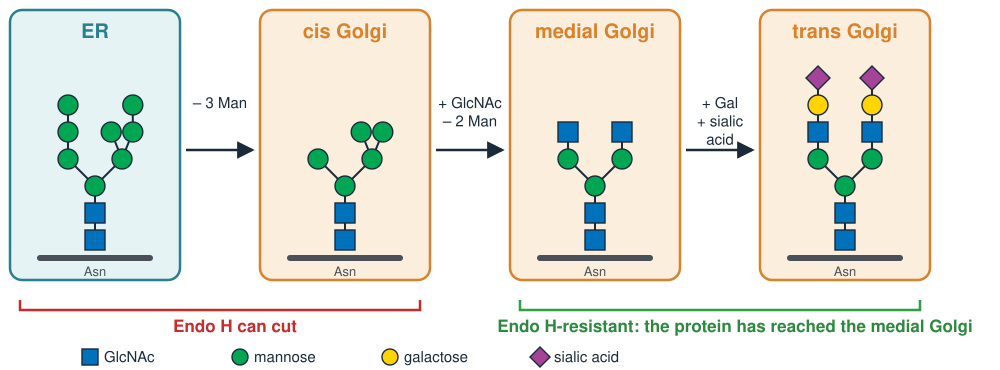
- N-linked glycans made in the ER are trimmed (mannose removed) and rebuilt (GlcNAc, galactose, sialic acid added): a complex glycan. Each step is done by a different enzyme in a different cisterna.
- O-linked glycosylation on Ser/Thr (mucins), proteoglycans, sulfation; lysosomal enzymes get a mannose-6-phosphate tag (cis Golgi).
- Proteolytic cleavage in the TGN and granules: proinsulin → insulin. Lab test for Golgi arrival: the glycan becomes resistant to the enzyme Endo H.
Moving through the stack: cisternal maturation
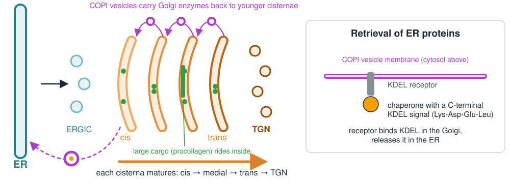
- The cisternae themselves move forward and mature: a new cis cisterna forms from ERGIC carriers, becomes medial, then trans, then breaks up in the TGN. Cargo rides along.
- COPI vesicles carry Golgi enzymes backwards to younger cisternae, and escaped ER proteins back to the ER (KDEL signal + KDEL receptor).
- Evidence: large cargo (procollagen rods, about 300 nm) crosses the stack without vesicles; in live yeast, one cisterna changes from cis to trans markers within minutes.
Sorting at the trans-Golgi network: three exits
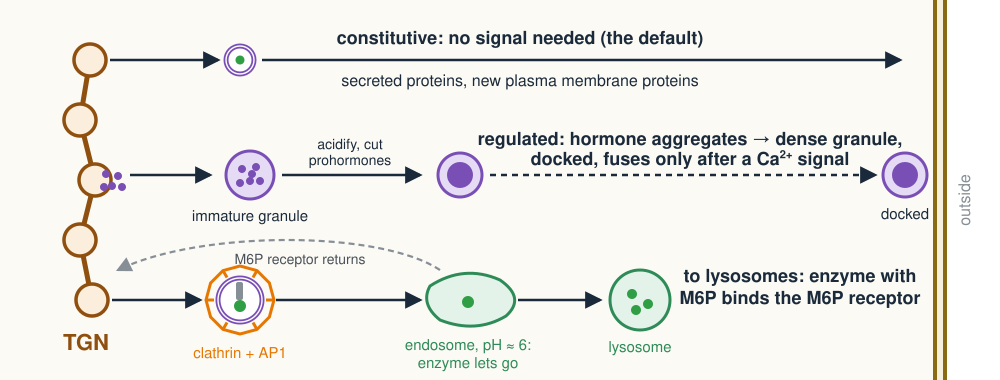
- To lysosomes: enzymes with mannose-6-phosphate bind the M6P receptor; clathrin + adaptor (AP1) vesicles take them to endosomes, where the acid pH releases them (the endocytosis lecture follows them on).
- Regulated secretion: hormones aggregate in the TGN and bud as secretory granules that wait for a signal.
- Constitutive secretion: everything without a special signal goes straight to the surface (the default). In epithelia there are separate apical and basolateral routes.
Constitutive and regulated secretion
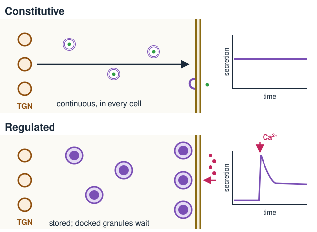
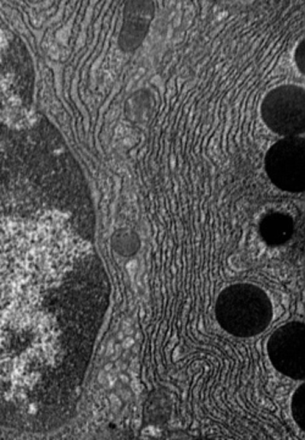
Close-up of the acinar cell from the start of the lecture: rough ER (parallel lines) and dark, stored zymogen granules (right). TEM.
- Constitutive: in every cell, all the time: collagen, albumin, antibodies, new plasma membrane proteins and lipids.
- Regulated: in endocrine, exocrine and nerve cells: granules mature (acidify, concentrate, cut prohormones), wait docked near the membrane, and fuse when cytosolic Ca²⁺ rises. Synaptotagmin senses the Ca²⁺.
How do we know? Watching cargo move in living cells
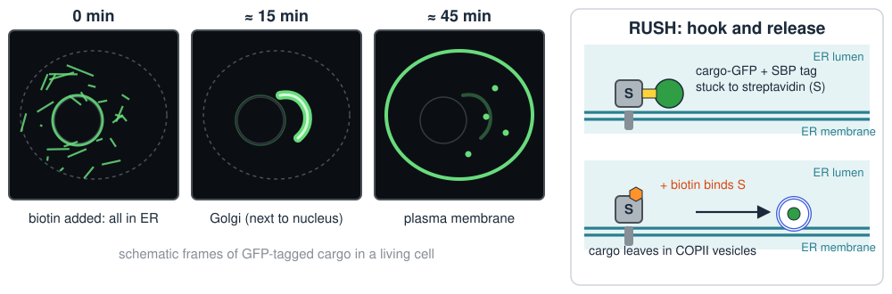
- Synchronise a wave of cargo: VSVG-GFP ts045 misfolds and stays in the ER at 40 °C and leaves when cooled to 32 °C. RUSH: cargo is held in the ER on a streptavidin hook; adding biotin releases it.
- Blocks stop the wave at one station: 15 °C (cargo collects in the ERGIC), 20 °C (in the TGN), brefeldin A (blocks ARF1 activation: no COPI, the Golgi merges into the ER). Try it: the pulse-chase demo.
Why it matters: botulinum toxin cuts SNAREs
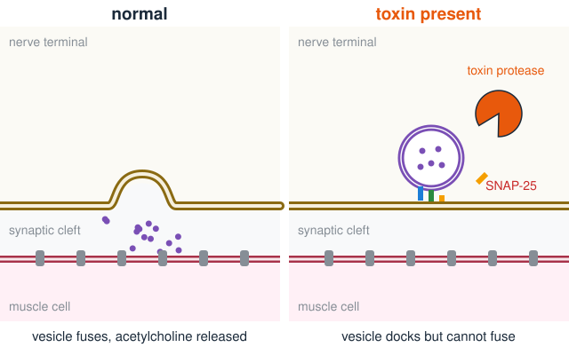
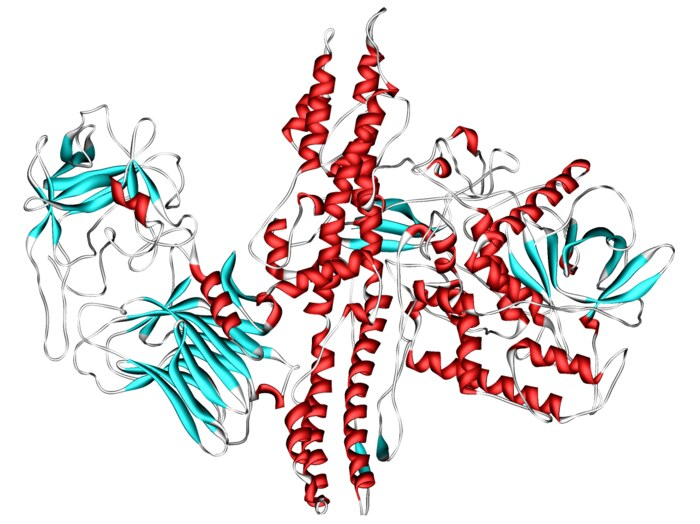
Botulinum neurotoxin A (PDB 3BTA). Red: α-helices, cyan: β-strands.
- Botulinum toxins (from Clostridium botulinum) enter motor nerve terminals; their protease chain cuts SNAP-25, VAMP or syntaxin. Vesicles dock but cannot fuse → no acetylcholine → flaccid paralysis. Among the most toxic substances known (about 1 ng/kg).
- Tetanus toxin cuts VAMP in inhibitory neurons of the spinal cord → spastic paralysis.
- Botox injections: tiny doses for dystonia, spasticity, chronic migraine, excessive sweating, wrinkles. The effect lasts about 3–4 months, until the nerve terminal recovers.
Why it matters: insulin secretion and type 2 diabetes
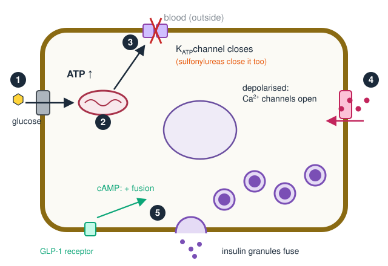
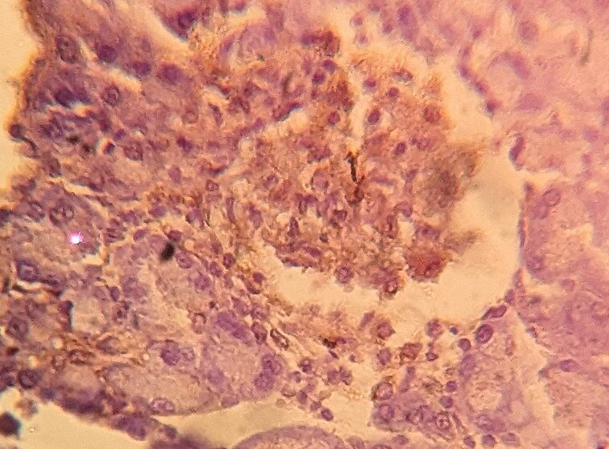
Rat pancreas, immunostained for insulin (brown): an islet of Langerhans among acinar tissue.
- A β cell stores about 10 000 granules. Glucose → more ATP → KATP channels close → depolarisation → Ca²⁺ channels open → granules fuse: a fast first phase (docked granules) and a slower second phase.
- Type 2 diabetes: the first phase is lost early; β cells are overloaded (ER stress) and release more unprocessed proinsulin.
- Drugs act on this pathway: sulfonylureas close KATP; GLP-1 receptor agonists (semaglutide) strengthen glucose-triggered granule exocytosis. More in Sjukdomslära.
Summary
- Secretory proteins travel ER → ERGIC → Golgi (cis → trans) → TGN → surface, granules or lysosomes, always inside membranes; pulse-chase and live imaging of a synchronised cargo wave showed the route.
- Each step uses a carrier: a coat (COPII out of the ER, COPI back and within the Golgi, clathrin at the TGN and plasma membrane), switched on by a small GTPase, bends the membrane and selects cargo by its sorting signals.
- Rab GTPases and tethers find the right target; SNAREs zip the membranes together and fuse them; NSF takes them apart again.
- The Golgi rebuilds glycans in cisternae that mature from cis to trans; COPI brings enzymes and escaped ER proteins (KDEL) back. The TGN sorts: M6P → lysosomes, granules → regulated secretion, the rest → constitutive secretion.
- Regulated secretion fuses stored granules when Ca²⁺ rises; botulinum toxin blocks fusion by cutting SNAREs, and the loss of first-phase insulin secretion is an early sign of type 2 diabetes.
Read more (optional): Alberts et al., Molecular Biology of the Cell, 7th ed., ch. 13.